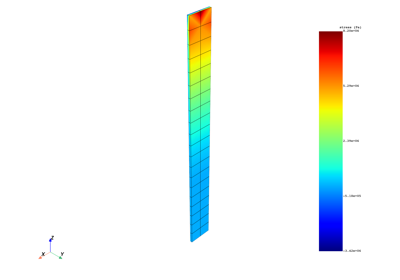
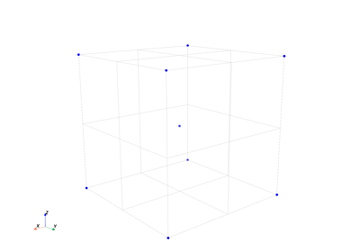

Plotting examples#
These examples show how to use the ansys.dpf.core.plotter.DpfPlotter class.



Load case combination for principal stress
Load case combination for principal stress

Plot results on a specific path
Plot results on a specific path



Plot on geometry elements